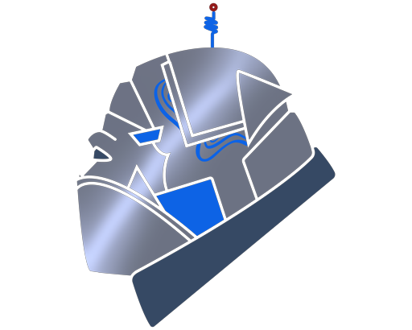

Credibility
Good for sponsors, parents, Fresno State, and community partners.

AVI RoboticsArs Vallis Ingenium RoboticsAVI logo palette
This direction makes AVI feel permanent, sponsor-ready, and rooted in Fresno State and the Valley. Cleaner, darker, and more formal.
More sponsor-facing, less scrappy. Uses restraint, authority, and fewer decorative tricks.
Good for sponsors, parents, Fresno State, and community partners.
History, leadership, nonprofit status, and programs get clearer hierarchy.
Needs real photos and specific proof so it does not drift corporate.